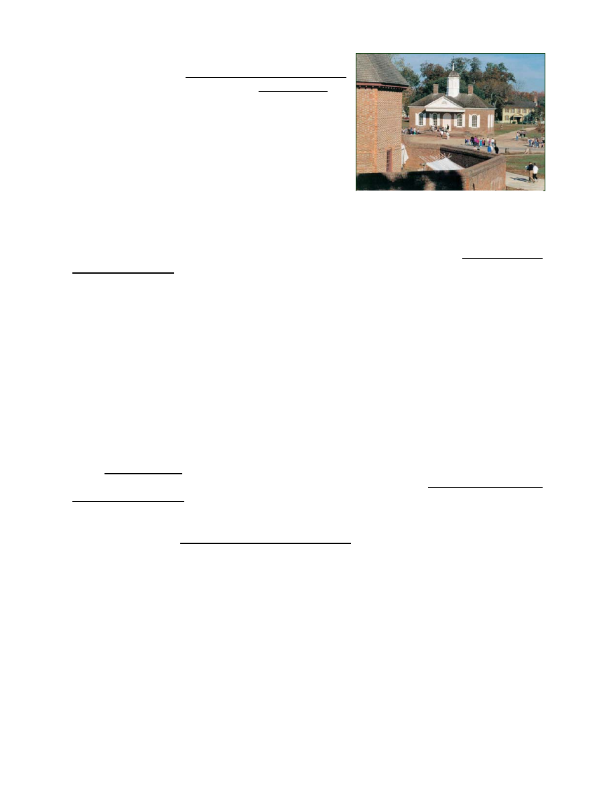
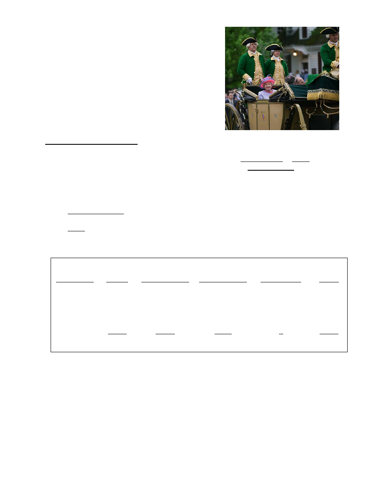
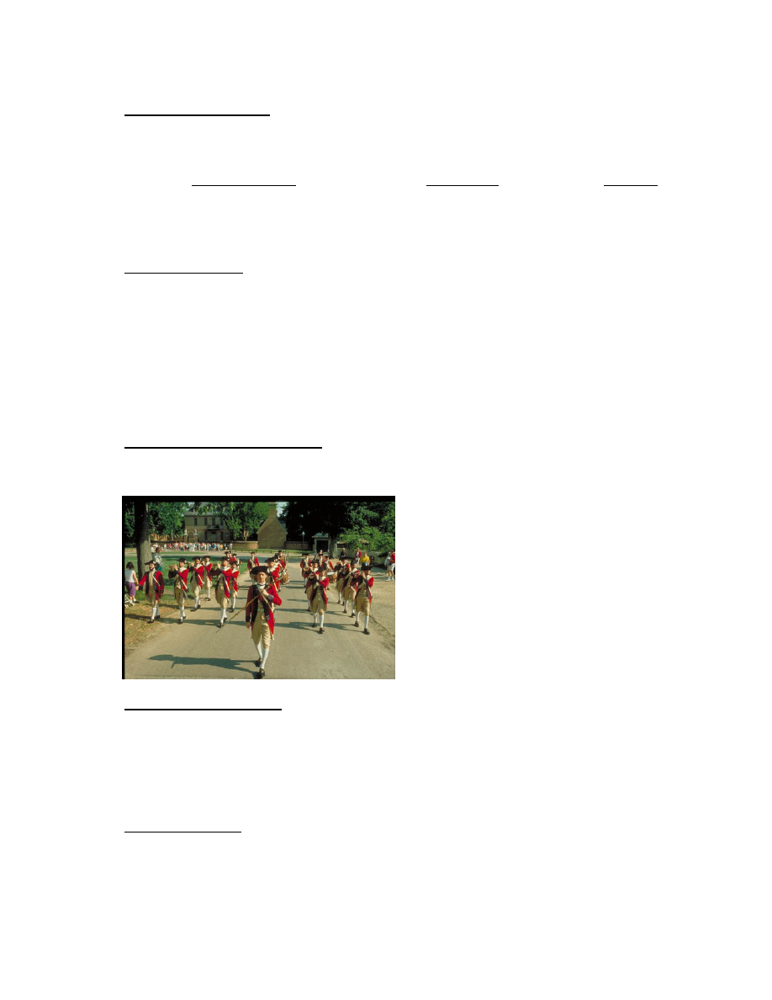
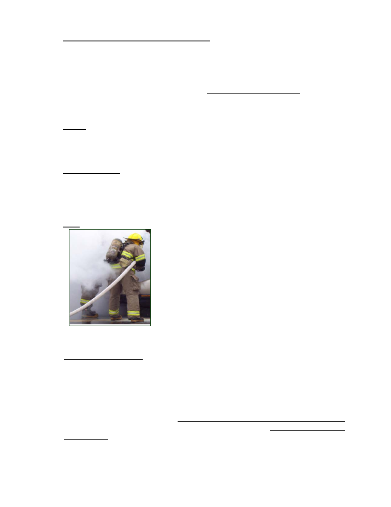
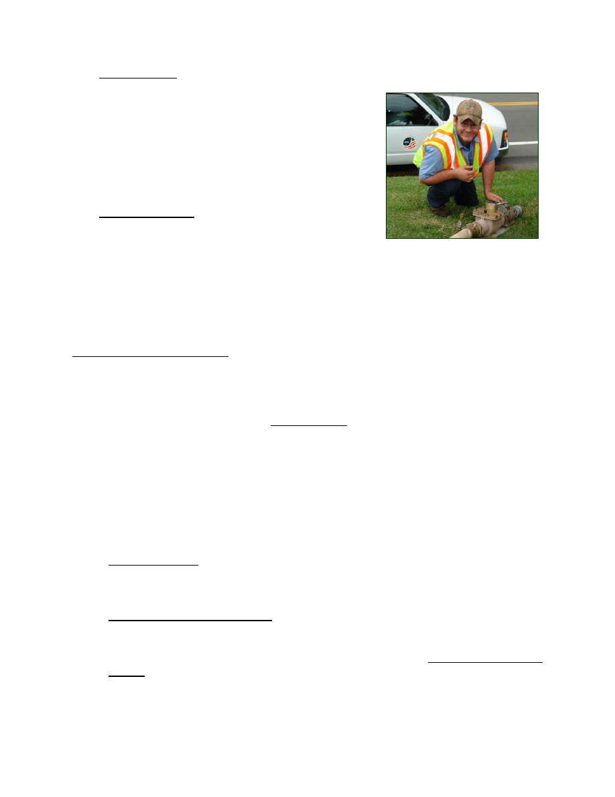
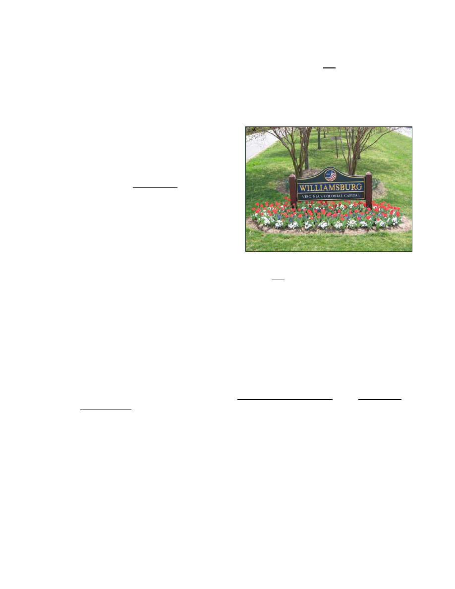

TO:
Mayor and City Council
DATE:
March 14, 2008
SUBJECT: City Manager's Budget Message
INTRODUCTION
“…an evermore safe, beautiful livable city…
…a city government cohesively led, financially strong,
always improving...”
Words in Williamsburg’s Vision
Statement such as “evermore” and
“always improving,” express the
determination of the City to constantly
change for the better, both the
community itself and its local
government.
Budget documents and budget
processes are primary vehicles for
creating and explaining the link
between the goals City Council wants
to achieve, the resources required to
accomplish those goals, and the performance of city government in converting resources
into accomplishments.
Budgets should capture the ways and means city government is “always improving,” in the
context of revenue and expenditure decisions. This year’s budget presentation takes
another step on the road to clearer thinking and expression of the links between goals,
resources, and performance.
Under Tab Two “Goals and Initiatives,” we have shown the relationship between the City
Council’s strategic planning/goal setting work and the budget. Evidences of performance,
past and future, build a bridge between goal statements and budget numbers. For the first
time we have identified a number of Desired Outcomes associated with each of the nine
City Council Dedicates Redoubt Park May 5, 2007
A - 1

big picture goals of City Council, and we have reported Observed Results with the most
current data available. This information is in addition to a narrative report on the current
state of achievement of each of Council’s 78 Initiatives.
Additionally, in this year’s budget presentation we have relocated and reworked the
performance information to align it more clearly with budget decisions. For all major
departments at the cost center level, expenditure and staffing data has been arrayed with
performance trends and targets covering four years. Desired outcomes and observed
results related to each department give further evidence of the linkage between city budget
decisions and outcomes in the lives of people in Williamsburg.
The table below maps the information contained under Tab Two:
Williamsburg
Vision
Biennial Goals of City Council
Initiatives Related to Goals
↓
Desired Outcomes Related to Goals
↓
Status Report on Accomplishment
↓
Observed Results
Link to Capital Improvement Plan
Departmental Performance Metrics
Departmental Missions
Expenditures and Staffing Summary
Departmental Cost Centers
↓
Desired Outcomes Related to
Departments
↓
Expenditures and Staffing
↓
Observed Results
Performance Trends and Targets
A - 2

Two hot concepts in municipal government
worldwide today are evidence based management
for governments themselves, and sustainability for
the communities they serve. Tab Two is the latest in
our evolving effort to apply evidence based
management, or performance management, to city
operations; but the more fundamental objective is to
build a sustainable community for the long haul.
Taken broadly, sustainability is environmental,
economic and social. The proposed budget
advances many causes, as identified in the Goals
and Initiatives, aimed at sustainability.
Looking now at the overall picture for the year ahead, the Proposed General Fund
Operating Budget can be summarized by:
• Projected Revenues of $34,143,950, up by 3.03%.
• Planned Spending of $34,161,636, up by 3.00%.
• Use of Reserves for current spending of $17,686
• No Change in Tax Rates.
• Personnel increase from 200 to 202.
• Allowance for merit pay increases averaging 3.75%.
In the Utility Budget, recommended is a 15% Water and Sewer rate increase, from $3.30
to $3.80 per one thousand gallons, beginning July 2008, per the Five Year Water and
Sewer Rate Analysis. The rate increase is driven by the cost of participation in regional
raw water development through Newport News King William Reservoir project.
In the General Fund Capital Improvement Program, a total of $10,617,637 is projected in
new capital spending, including debt service. Important capital projects include the city
share of a new middle school and elementary school, continued construction of Kiwanis
Park Softball Complex, the new Emergency Operations Center, and first step to improving
and expanding the Municipal Building.
The combined total of the four funds – General Operating Fund, Utility Fund, Sales
Tax/Capital Fund, and, now shown as a separate fund, the Public Assistance Fund –
amounts to $53,223,146.
Williamsburg Courthouse of 1770
A - 3

The proposed revenue estimates and spending plan,
if executed exactly as projected in the proposed FY
2009 budget, would result in a General Fund balance
on June 30, 2009 of $17,297,066.
With the above as an overview, the remainder of the
Budget Message discusses a number of issues that
are particularly helpful in understanding and reviewing
the proposed budget, beginning with General Fund
revenue projections.
REVENUE PROJECTIONS
Next year (FY 2009) we forecast General Fund revenues of $34,161,636, a 3.0% increase
over the current year (FY 2008) budget amount. Behind the Budget Guide tab is
a detailed explanation of revenues, explaining the legal basis and ten year trends of all
revenue sources. The following is a summary of significant revenue changes in next year’s
budget:
1.
Property Taxes. Property tax projections are based on a total anticipated value of
real estate of $1.866 billion dollars, an increase from current land book values of
3.5%. Assuming no change in the tax rate of $.54 per hundred dollars of assessed
value, we estimate real property tax collections of $9,870,000 next year. The chart
below details the change anticipated in real estate values:
$ in Millions
FY 2008
Actual
Values
FY 2009
Estimated
Reassessment
Change due to
Reassessment
FY 2009
Estimated New
Construction
FY 2009
Totals
Residential
1017.5
1066.9
4.9%
2.3
1069.2
Commercial
667.5
667.6
0%
0
667.6
Multi-Family
118.2
129.4
9.5%
0
129.4
Totals
1,803.2
1,863.9
3.4%
2.3
1,866.2
Unlike Williamsburg, many localities will experience a decline in real estate tax
receipts next year. Williamsburg’s housing market has remained relatively stable,
bucking the national trend.
Other property taxes include personal property (car tax) and business property.
These categories are showing modest growth. All property taxes (real and tangible)
taken together are expected to generate $12,684,800.
Queen Elizabeth II arrives in Williamsburg May 3, 2007
A - 4

2.
Other Local Taxes. Other local sources of taxation include various consumer utility
taxes and franchise fees, business licenses, transient lodging and prepared food or
"room and meal" taxes. Taken together, other local taxes will generate
$15,340,600, a 1.5% increase.
The estimate for room and meal tax collections is projected to total $4,150,000 for
room tax, a 1.2% increase; and $5,900,000 for meal tax, a 2.1% increase, over last
year’s adopted budget. These estimates reflect level sales coming off a strong
FY07 and 08 in the city’s tourism economy. The room tax estimate does not
include the $2.00 destination marketing surcharge for additional tourism promotion,
which is a separate line item in the budget of $1.8 million.
Taken together, all local sources of taxation are expected to generate $28,025,400,
a 3.9% increase over the current year budget.
3.
User Fees. User fees include license and permit fees, including building permits,
and various charges for service. Licenses and Permits are projected to decline
5.9% to $235,300.
4.
Fines and Forfeitures. This category covers court fines – mostly for traffic
violations, parking fines, and code violation fines. It is expected to remain level at
$244,000.
5.
Revenue From Use of Money and Property. The interest earning estimates,
down 15.8%, ($800,000 in the General Fund and $165,000 in the Utility Fund) are
based on assumed earnings of 3.5% on daily accounts and on longer-term
accounts. The property rental estimate is $560,400, a 10% increase, covering the
Community Building, Transportation Center, City Square, and the Prince George
Parking Garage.
6.
Miscellaneous. The largest revenue line
in this category is the Emergency Medical
Transport fees enacted three years ago.
They are projected to return $300,000 – all
of which is earmarked for EMS service.
7.
Revenue From the Commonwealth.
Revenue from the state government in the
amount of $2,813,102, which includes support for constitutional officers and both
categorical and non-categorical aid, are estimated to decrease slightly. The
estimate of Sales Tax for Education of $762,062 is based on State Department of
Education calculations.
A - 5
EXPENDITURE ISSUES
Next year we have proposed General Fund operating expenditures of $ 34,161,636, an
increase of 3.0% over the current year adopted budget. Broken down in four large
categories:
FY 2008
Adopted
Budget
FY 2009
Proposed
Budget
Percent
Increase/
(Decrease)
City Departments
$ 17,911,908
$18,669,782
4.2%
Constitutional Officers and Judicial
$ 1,894,905
$ 2,077,213
9.6%
Education and Library
$ 8,030,613
$8,001,428
(0.4%)
Outside Agencies and Health
$ 5,329,665
$5,413,213
1.6%
The Proposed Budget recommends a net increase of two personnel positions, one in the
General Fund and one in the Utility Fund. If adopted, total full time equivalent city positions
in both funds will stand at 202. Changes in expenditures worthy of note are:
1.
Salary Ranges and Pay. The city’s Merit Pay Plan gives management the flexibility
to target increases where most needed. Our goal should be to remain as competitive
as possible on compensation within the limits of revenue growth. Therefore, I am
recommending the following:
• Increase in Pay Ranges of 3.0%, in order to account for the rise in wages to keep
city pay ranges reasonably competitive. The rise in the Consumer Price Index in
calendar year 2007 was 2.9%. (The range increase does not in itself change
anyone’s salary and therefore has no direct impact on the budget.)
• Average Merit Increase allowance of 3.75%, costing $368,000 in salary increases,
to be applied per the city’s Merit Pay Plan as detailed in the Personnel Manual.
• The merit increase will hold our employees on average to 97.0% of the middle of
their salary ranges.
A - 6

2.
Personnel Positions. As explained in more detail under the departmental headings,
the total number of positions in the city increases from 200 to 202 in the proposed
budget:
DEPARTMENT
POSITION
GRADE
City Manager
Communications Specialist
9
Public Utilities
Civil Engineer
9
3.
Health Coverage. The city's health plan is largely self-insured. Anthem is paid a set
amount to administer the plan, but the city keeps savings when actual costs fall below
the "premium,” and pays more when costs exceed the premium. That liability,
however, is capped at 125% of premiums through excess insurance. Savings to date
have created a reserve, $496,076 as of the end of FY 2007, to fund losses should
losses exceed the amount budgeted in any given year. Therefore, we budget for the
expected loss only. Based on experience so far this year, we have included a 10%
increase in funds budgeted for health insurance and the dental reimbursement
program over the current year budget in the total amount of $1,206,150.
4.
Virginia Retirement System. VRS sets the contribution rate for the city based on
biennial actuarial studies. Our rate beginning July 1, 2008 is proposed to be 15.49%.
Based on our projected payroll next year, we expect to pay $1,478,130 to fund
employee VRS retirements, nearly
the same as the current budget.
This rate takes into account a proposed
increase in the retirement formula
multiplier from 1.7 to 1.85 for police
officers and firefighters effective for
retirements commencing January 1, 2009
or later. The net cost to the city for this
enhanced benefit will be $95,000
annually.
5.
City Manager’s Office. After discussion with City Council at the last two retreats over
the need to improve the city’s communications capacity, a new position of
“Communications Specialist” has been added to the budget. The growth of the city’s
public information activities over the past decade and more have come to the point
that this job – common in other localities – is needed. This will bring the CM budget
to $659,419, a 27% increase.
6.
Electoral Board. A decrease of 36% to $24,612 is explained by not needing to run
the high number of elections as in FY 08.
A - 7

7.
Joint Courthouse and Judicial Functions. The Joint Courthouse Agreement, dated
December 1996, between the city and James City County, governs cost sharing not
only for taking care of the new courthouse, but for judicial functions related to the
Courthouse, including: Circuit Court, General District Court, Juvenile and Domestic
Relations Court, Clerk of the Circuit Court, Commonwealth Attorney, and City/County
Sheriff. The Courthouse Agreement provides that the city and county will determine
population based on the annually updated Hampton Roads Data Book published by
the Hampton Roads Planning District Commission. The estimate of city cost is
$400,000, up 8.1% from the prior year.
8.
Police. The Police Department proposed budget is $4,287,366, up from the current
year by 1.9%. In the current year one entry-level police patrol officer was added to
provide extra manpower to the daily 3 p.m. to 3 a.m. “power shift.” The Chief has
deferred his earlier request to add another position for the same purpose in FY 09.
9.
Parking Garage. Based on experience in the first four years of operation, we have
set the Prince George Parking Garage operating budget at $132,833. This expense
is covered by $250,000 in projected parking garage revenues. Revenues in excess
of operating costs will help pay debt service on the structure. (The balance owed on
the Parking Garage as of January 2008 was $5,720,997.)
10. Fire. The Fire Department proposed budget is $3,340,666, up from the current year
by 1.6%. Over the past three years, five new
firefighter/EMT positions have been added. These
firefighters have helped the fire department maintain
adequate on duty staffing given the constant
pressure of time away for leave and training. The
five positions were also an investment in staffing
which will be required to open a future auxiliary fire
station (nine positions total) on Ironbound Road
adjacent to High Street.
11. Regional Jail and Youth Detention. Funding for the city’s share of the Virginia
Peninsula Regional Jail is expected to be $1,106,638, an increase of 18.2% from the
current budget. The city share of jail costs is based on the average usage rate over
the past five years. Each member jurisdiction (Williamsburg, James City, York and
Poquoson) pays for their share of the inmate population based on the location where
the offense occurred and the arresting authority. The city’s number of inmates
relative to James City County has climbed rapidly over the last few years. We are
working this issue to ensure the assignment of inmates is correct. Other detention
related expenditures include: the Middle Peninsula Juvenile Detention Commission
at $120,000, which is projected to decrease by 14.3%; and Colonial Group Home
Commission at $76,256, which is proposed to increase by 7%.
A - 8

12. Public Works. Public Works divisional budgets totaling $4,173,643 (Engineering,
Streets, Refuse Collection, Landscape, Cemetery,
Mosquito Control, Facilities Maintenance) average
2.9% above the current year amount. Within this
budget is the street resurfacing annual commitment
set at $470,000. The cost of refuse collection is
estimated at $918,500, up 4.2% from the prior year’s
budget.
13. Human Services. Salaries in the Human Services
Department
are
funded
in
part
by
the
Commonwealth, but the department is a city
operation. Local funding supplements State funding to allow the department to
provide a full array of human services. The local budget for next year is estimated at
$811,338, a 26% increase over the prior year. This large increase is due in
significant part to increasing the estimate from $38,747 to $91,060, needed to fund
the city’s obligations under the Comprehensive Services Act.
OUTSIDE AGENCY ISSUES
Nearly one-half of the city's General Fund budget goes to agencies and activities not under
City Council's direct operational control. Funding relationships are often complex, and vary
in degrees of funding discretion possible from year to year. The "Notes on Funding
Relationship," contained under the Budget Guide tab, help explain the city's role in
providing financial support to these agencies and activities.
Background documentation from outside agencies is provided in the Appendix of the
Proposed Budget, or provided under separate cover, as in the case of the School and the
Library budgets.
A number of issues concerning outside agency funding requests for the coming year need
to be highlighted:
1.
Health Services. The four agencies named below provide health services to city
residents, workers and visitors. The total recommended funding for FY 09 is
$493,705, an increase of 4.9% over the current year.
The Peninsula Health District budget request to the city is $135,796, a 4.1%
increase from the current year.
The Human Services Advisory Board has recommended Olde Towne Medical
Center (Williamsburg Area Medical Assistance Corporation or WAMAC) receive
funding of $92,700, a 3.0% increase over the current year; and that the
A - 9

Comprehensive Health Investment Program (CHIP) receive $19,349, a 5.8%
increase over the current year.
Finally, the Colonial Services Board, the agency through which the city provides
mental health and retardation services to its residents, requests a 6.0% increase in
city contribution to $245,860, based on the multi-jurisdictional funding formula.
2.
Schools. Based on the School Board's budget at this point in time, and State
funding based on General Assembly action, we can expect a city contribution to the
operational budget in the amount of $7,099,448, nearly level with the current year.
The final amount will be determined by formula as set forth in the current five-year
city/county Joint School Agreement, effective since July 1, 2007, and the final
amount of State support.
As a result of current and past school agreements, the city's proportional share of
funding for the schools over the past decade has declined, even when funding in
absolute dollars increases, and that trend will continue next year. City children
numbering 751 now account for 7.46% of the children enrolled in the system.
Under the Joint School Agreement, in FY 09 the city pays a share equal to its
enrollment times a factor of 1.15. So, the city continues to pay a premium to
participate in the joint system. Based on the current enrollment split, the city’s
contribution is projected at 8.58% and the county’s 91.42%, of local funding for the
schools.
3.
Library. The Williamsburg Regional Library is funded under the revised library
agreement with James City County, effective July 1, 2006. That agreement calls for
funding of operational costs based on the proportion of circulation by residency.
Based on the library’s figures, the city/county circulation ratio for fiscal year 2007
was 15.86% city, and 84.14% county. The Library’s proposed budget of $6,391,279
is a 1.8% increase, which would result in an estimated city contribution of $884,955.
York County’s recent announcement to withdraw from participation in the WRL and
open their own branch library in a shopping center will hurt WRL funding in FY 10
and following, but should not have much effect this year.
4.
Human Service Agencies. The city's Human Services Advisory Board, as
requested by City Council, has evaluated Human Services Agency requests for
funding, and made its recommendations to City Council. Their analysis and
recommendations are in the Appendix to the Proposed Budget. The proposal is a
9.4% increase from the current year in the total amount of $115,565. The proposed
budget follows the Human Services Board’s recommendations in all respects.
5.
Community and Economic Development Agencies. The city has supported
tourism advertising and promotion through Colonial Williamsburg and the Greater
Williamsburg Chamber and Tourism Alliance.
This year Colonial Williamsburg Foundation has requested $1,365,000, level with
existing funding. The Greater Williamsburg Chamber and Tourism Alliance has
A - 10

requested funding of $1,031,000 (which includes $100,000 for Chamber
operations), up 13.8% from the current year amount. I am recommending that the
city increase its total support for CWF and the Alliance by 3.5%. I am further
recommending that the city maintain its traditional 60/40 split between CWF and the
Alliance resulting in $1,410,000 for CWF, and $940,000 for the Alliance. Our goal
should be to do all the city reasonably can to promote visitation to Williamsburg in
the most effective way we know.
The proposed budget also includes an
estimated $1,800,000 of pass through
funding from the $2.00 room surcharge
to the Williamsburg Area Destination
Marketing Committee’s campaign. This
brings the total city tax dollars for tourism
promotion to $4,150,000.
Included in the appendix are letters from
the Williamsburg Hotel and Motel
Association requesting direct city funding
of WADMC, in an additional amount of
$950,000. From the Williamsburg Area
Restaurant Association we have received
a request for $40,000 funding to hire an executive director and undertake
promotional activities. These new requests have not been included in the proposed
budget, but as noted above, an increase of $79,000 for tourism promotion has been
included in the proposed budget.
Five years ago in FY 04 the city received $3.99 million in room tax receipts, and
funded CWF/Alliance $2.16 million (54% of room tax used for CWF/Alliance
contribution). Next year we project room taxes to generate $4.15 million, and
CWF/Alliance funding of $2.35 million (57% of room tax used for CWF/Alliance
contribution). The point is that the city continues to expand its contribution to
tourism promotion both in actual dollars, and as a percent of room tax receipts.
In addition to tourism promotion, the city support is recommended for a number of
other agencies that make important economic development and community
development contributions to Williamsburg:
Williamsburg Redevelopment & Housing Authority
$35,000
Hampton Roads Planning District Commission
$10,897
Peninsula Council for Workforce Development
$ 5,947
Hampton Roads Economic Development Alliance
$11,793
Thomas Nelson Community College
Hampton Campus
$ 6,149
Williamsburg Campus rental
$20,000
Hampton Workforce Development Center
$10,500
Jamestown/Yorktown Foundation
$10,000
A - 11

Colonial Soil and Water District
$ 2,794
Hampton Roads Partnership
$ 5,325
Hampton Roads Film Office
$10,000
Williamsburg Land Conservancy
$10,000
Heritage Humane Society
$16,000
Williamsburg Farmers’ Market
$ 4,000
Crossroads Coordinating Committee
$10,000
2007 Host Committee (Leadership Forum)
$10,000
Military and Federal Facilities Alliance
$ 6,621
Total including CWF, GWCTA, and WADMC $4,335,026
6.
Cultural. The Williamsburg Arts Commission has again performed the task of
receiving, evaluating, and recommending funding for the arts. Their report is copied
in the Appendix to the Proposed
Budget. They recommend local arts
funding of $144,200, an increase of
2.9%. Of this amount, the city
contribution would be $67,100. This
assumes a state arts commission
challenge grant of $10,000, and
county funding of $67,100. The State
grant last year was $10,000.
City sponsorship for the fifth annual “Festival Williamsburg” is provided again in the
amount of $50,000.
7.
Transportation. In 2006 the General Assembly adopted enabling legislation to
create the Williamsburg Area Transit Authority to operate Williamsburg Area
Transport. The Cooperative Agreement and Bylaws are before the prospective
partners this Spring. The partners are James City County, York County, City of
Williamsburg, Colonial Williamsburg, and the College of William and Mary.
Williamsburg’s funding participation will be driven by the Cooperative Agreement.
Our estimate of the FY 09 cost to the city will not exceed $265,000, level with the
current year.
Under Transportation are two continuing regional partnerships to promote
alternatives to highway travel. Continued support for Virginian’s for High Speed Rail
in the amount of $5,000 is recommended, and $4,717 to provide funds for the
Williamsburg EDA to participate in business development underwriting for Newport
News/Williamsburg International Airport .
A - 12
CAPITAL IMPROVEMENT PROGRAM
Revenue to fund the CIP comes from 1% Sales Tax Receipts and funds reserved for
capital improvements. CIP items are explicitly linked to City Council’s “Goals and Initiatives
for the Biennium.”
Here are some of the highlights from this year's update of the Five Year Capital
Improvement Program:
• Ironbound Road is a new CIP item which will be funded with predominantly VDOT
Urban dollars and developed over the next five years.
• Underground Wiring will accompany the reconstructed portions of Ironbound Road
near Richmond Road. The next major stand along underground project is slated for
Page Street staring in FY 10.
• Traffic Signal improvements are planned in FY 09 for Richmond Road/Waltz Farm
Drive, with Second Street/Parkway Drive, and York Street/Quarterpath Road,
projected in FY 10.
• Corridor Enhancements are planned as part of the Regional Corridor Program for
York Street (Route 60); and upgrading of guardrails will continue.
• Sidewalk Upgrades next year are focused on the north side of lower Richmond
Road, and a new sidewalk has been planned along Route 199 east of Jamestown
Road for the following year.
• The major Stormwater Project for Route 143 next year is rebuilding bank
stabilization and erosion control.
• Kiwanis Park reconstruction continues with Field #2 and #3 as part of a five year
Master Plan, and additional improvements for Redoubt Park will access Redoubt
#2.
• A new Emergency Operations Center and Fire Administration behind #1 Fire Station
will break ground in FY 08 and be completed in FY 09.
• To further enhance the E-911 system, a microwave link between the city and the
adjoining counties.
• For the Municipal Center funds to complete plans for expansion and rehab of the
municipal building.
• The Information Technology capital plan includes expansion of the storage network
to increase redundancy and survivability of the city’s network.
A - 13

• W/JCC Schools capital needs including the 4
th
middle school and 9
th
elementary
school, are identified for city contribution.
The Planning Commission’s review of the draft CIP, used in developing the final
recommendation, is provided under the Capital Improvements tab.
UTILITY FUND OVERVIEW
The Utility Fund projects $4,904,425 in operating revenues and a 6.3% increase in
operating expenditures. A 15% water rate increase, $3.30 to $3.80 per 1000 gallons, is
recommended.
A Rate Analysis for the Utility Fund is provided under the Appendix tab in the Proposed
Budget. The analysis shows a future with rate increases, and a future with no rate
increases. The Rate Analysis is updated annually as part of the budget process.
Although contract negotiations are still in progress, we expect to begin paying for
expensive ”new water” from the future King William Reservoir this year. Williamsburg rate
payers will help pay the cost of building and operating the King William Reservoir in order
to share in its benefits. Water from Newport News is essential to Williamsburg water
security in the future, as it has been in several past droughts. With increases in the user
rates we are also recommending significant increases in water and sewer availability fees
for new construction. Water connections are proposed to double starting at $5,000 for a
residential connection. New customers will need to share in the high cost of “King William”
water through higher connection fees.
Additionally, the cost of the Sanitary Sewer Overflow Consent Order will be borne by the
Utility Fund. Unlike nearly all other area jurisdictions, the city still does not charge
separately for sewage collection and pumping, but rather bears this cost using water
revenue. City rates for water and sewer combined will continue to be low in the region, as
shown in Exhibit 3 of the Rate Analysis. But we do anticipate several more years of water
rate increases.
Waller Mill Reservoir and Park
A - 14

A - 15